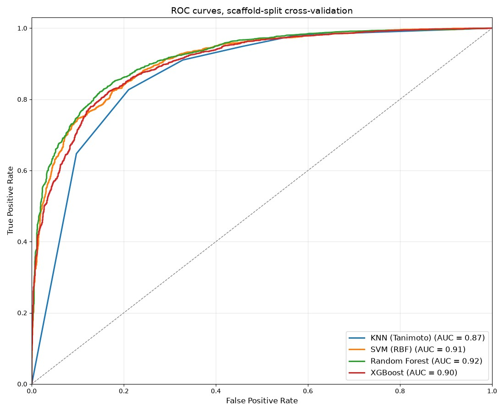
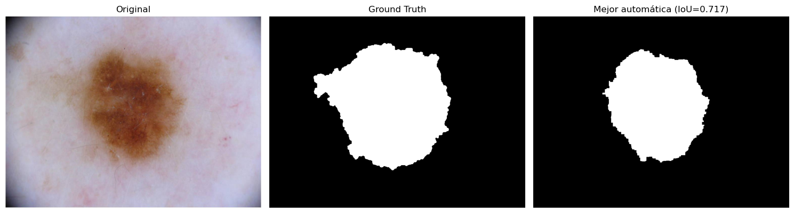

RNA-seq analysis dashboard.
Differential expression with Welch's t-test and Benjamini-Hochberg correction, PCA, volcano and MA plots and heatmaps, on synthetic data and the real airway dataset (Himes et al., 2014).
I build machine learning systems end to end, from messy raw data to an application you can actually use.
Weekly SKU-level forecasts on more than a million real e-commerce transactions. A global LightGBM model, benchmarked against naive, seasonal-naive and moving-average baselines under rolling-origin backtesting, with every feature read at the forecast origin to rule out leakage.
Gemini generates candidate molecules as SMILES strings, a cheminformatics validation engine filters out physically impossible structures, and the survivors are rendered as optimized 3D models. Built with Python, Streamlit, the Gemini API and RDKit.
Differential expression with Welch's t-test and Benjamini-Hochberg correction, PCA, volcano and MA plots and heatmaps, on synthetic data and the real airway dataset (Himes et al., 2014).
Virtual screening on curated ChEMBL IC50 data with Morgan fingerprints. Random Forest led four benchmarked models with 0.96 AUROC under stratified 5-fold cross-validation.

Otsu, K-means and watershed segmentation selected by IoU, then 40 shape, colour and texture features and an SVM. 90.2% accuracy and 84% melanoma sensitivity on ISIC 2018.

I trained as a biologist, but the part I always enjoyed most was the data. Biostatistics was my favourite subject, and my undergraduate thesis turned photographs of salamanders into a number that could be measured and compared, work that later became part of a peer-reviewed paper. That's what took me to the MSc in Bioinformatics, and to building projects well beyond biology.
Currently looking for a data internship or junior role for 2026-27, in data analysis, data science or machine learning, with a particular interest in health and life sciences data. Available in English, Spanish and Galician.